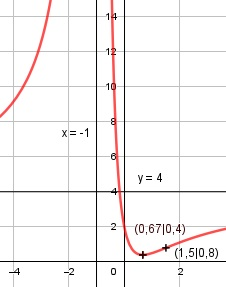

Aufgabe 122 4x2 - 4x + 2 f(x) = --------------- (x + 1)2 Quotientenregel erste Ableitung: u = 4x2 - 4x + 2, u' = 8x - 4 v = (x + 1)2 Kettenregel: v' = 2 * (x + 1) (8x-4)*(x+1)2 - 2*(x+1)*(4x2-4x+2) f'(x) = ------------------------------------ (x + 1)4 (x+1)*[(8x-4)(x+1) - 2*(4x2-4x+2) f'(x) = ----------------------------------- (x + 1)4 8x2+ 4x - 4 - 8x2+ 8x - 4 f'(x) = ---------------------------- (x + 1)3 12x - 8 f'(x) = ---------- (x + 1)3 Quotientenregel zweite Ableitung: u = 12x - 8, u' = 12 v = (x + 1)3 Kettenregel: v' = 3 * (x + 1)2 12*(x + 1)3 - 3*(x + 1)2*(12x - 8) f''(x) = ------------------------------------- (x + 1)6 (x + 1)2*[12*(x + 1) - 3*(12x - 8)] f''(x) = ------------------------------------- (x + 1)6 12x + 12 - 36x + 24 f''(x) = ------------------------- (x + 1)4 -24x + 36 f''(x) = ----------- (x + 1)4 Zur Beurteilung, ob f'''(x) ≠ 0 : (Begründung siehe Aufgabe 105) u = -24x + 36, u' = -24 u' -24 f'''(x) = --- = ----------- ≠ 0 für alle x ≠ -1 v (x + 1)4 Polstellen, Nenner = 0: (x + 1)2 = 0|ⱱ x + 1 = 0|-1 x = -1 Nenner = 0 und Zähler = 4*(-1)2 - 4*(-1) + 2 = 10 ≠ 0 --> senkrechte Asymptote Definitionsbereich: -∞ < x < ∞, x ≠ -1 Waagerechte Asymptote: -12x - 6 f(x) = 4x2 - 4x + 2 : x2+2x+1 = 4 + ---------- -(4x2 + 8x + 4) (x + 1)2 ------------------- -12x - 6 -12x - 6 4 + ---------- geht gegen 4 für x --> ± ∞ (x + 1)2 Wertebereich: 0,67 ≤ f(x) < ∞ (siehe Extrempunkte) Symmetrie zur y-Achse bzw. zum Punkt (0|0): 4*(-x)2 - 4*(-x) + 2 4x2 + 4x + 2 f(-x) = ----------------------- = -------------- ((-x) + 1)2 (-x + 1)2 4x2 + 4x + 2 f(-x) = ------------- ≠ f(x) (1 - x)2 --> keine Achsensymmetrie -(4x2 + 4x + 2) -f(-x) = --------------- ≠ f(x) (1 - x)2 --> keine Punktsymmetrie Nullstellen: f(x) = 0 4x2 - 4x + 2 -------------- = 0 |*(x + 1)2 (x + 1)2 4x2 - 4x + 2 = 0 |:4 x2 - x + 0,5 = 0 p, q - Formel p = -1, q = 0,5 x1,2 = x1,2 = 0,5 ± x1,2 = 0,5 ± --> keine Lösung --> keine Nullstellen Schnittpunkt mit der y-Achse: x = 0 4 * 02 - 4 *0 + 2 f(0) = ------------------- = 2 (0 + 1)2 Sy(0|2) Extrempunkte: f'(x) = 0 12x - 8 ---------- = 0 |*(x + 1)3 (x + 1)3 12x - 8 = 0 |+8 12x = 8 |:12 x = 2/3 4 * (2/3)2 - 4 * 2/3 + 2 f(2/3) = ---------------------------- = 0,4 (2/3 + 1)2 -24 * 2/3 + 36 f''(2/3) = ------------------ > 0 (2/3 + 1)4 --> Tiefpunkt (2/3|0,4) Wendepunkte: f''(x) = 0 -24x + 36 ----------- = 0 |*(x + 1)4 (x + 1)4 -24x + 36 = 0 |-36 -24x = -36 |:(-24) x = 1,5 4 * 1,52 - 4 * 1,5 + 2 f(1,5) = ------------------------ = 0,8 (1,5 + 1)2 f'''(1,5) ≠ 0 --> WP (1,5|0,8) Graph:
